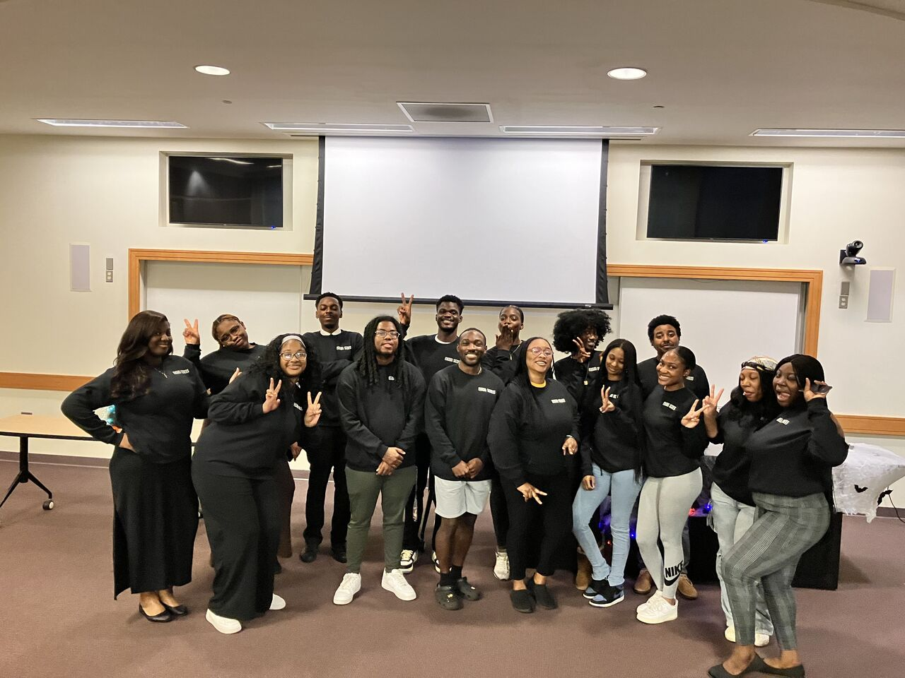

Student data community

Data Tribe
A student-led data community at Bowie State University, founded in 2022 to build applied data skills, professional connections, and a sense of belonging in the field.
What it offers
Programs and activities
Workshops and bootcamps
Training sessions, technical lectures, and a 23-student boot camp track.
Peer and mentor support
Mentorship programs and peer-led learning across academic levels.
Panels and speakers
Industry panels, including a session with Northrop Grumman engineers.
Symposiums and events
Six campus events, plus research projects and student hands-on activities such as an SQL escape room.
Membership
Who it serves
Data Tribe is open to all undergraduate and graduate students, regardless of major, with a 3.0 minimum GPA. The community has grown to more than 150 members since launch.
